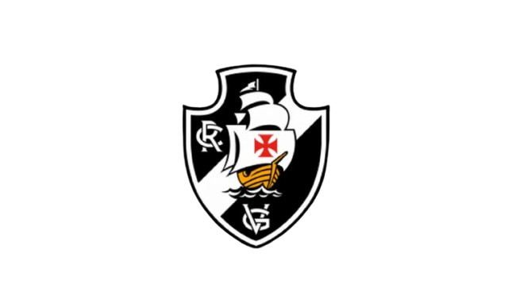

Nossa proposta
Este fã clube foi criado com o objetivo de homenagear o Clube de Regatas Vasco da Gama e toda a sua trajetória dentro do futebol brasileiro.
Ao longo de mais de um século de história, o Vasco construiu uma identidade marcada pela luta contra o preconceito, pela inclusão e pela paixão de sua torcida. Esses valores transformaram o clube em uma das instituições esportivas mais respeitadas do país.
A ideia deste fã clube é reunir torcedores que admiram essa história, compartilhar curiosidades sobre o clube e manter viva a tradição vascaína para as futuras gerações.

Tradição
Fundado em 1898, o Vasco possui uma das histórias mais ricas do futebol brasileiro.
Inclusão
O clube foi pioneiro na luta contra o preconceito no futebol brasileiro.
Paixão
A torcida vascaína é conhecida por sua lealdade e paixão pelo clube.